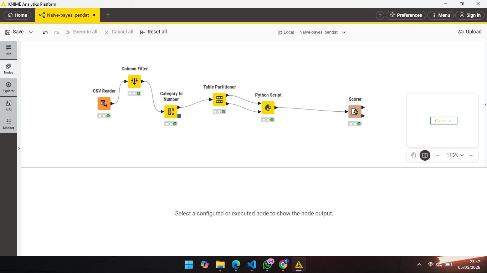

Perhitungan Naive-bayes#
Dokumentasi ini merangkum proses pengembangan model Machine Learning untuk mengklasifikasikan status stunting menggunakan platform KNIME Analytics Platform dan integrasi Python.
1. Pendahuluan#
Proyek ini bertujuan untuk memprediksi status stunting dan wasting pada anak berdasarkan data antropometri. Algoritma yang digunakan adalah Naive Bayes, sebuah metode klasifikasi yang berakar pada teorema Bayes dengan asumsi independensi antar fitur.
Rumus Matematika Naive Bayes#
Secara matematis, Naive Bayes bekerja dengan menghitung probabilitas posterior sebagai berikut:
Keterangan:
\(P(C|X)\): Probabilitas kelas \(C\) (misal: Stunting) diberikan fitur \(X\) (Probabilitas Posterior).
\(P(X|C)\): Probabilitas fitur \(X\) muncul pada kelas \(C\) (Likelihood).
\(P(C)\): Probabilitas awal kelas \(C\) (Prior).
\(P(X)\): Probabilitas bukti fitur \(X\) (Evidence).
Karena kita menggunakan data numerik kontinu (seperti berat dan tinggi badan), model ini diimplementasikan menggunakan Gaussian Naive Bayes, yang mengasumsikan data setiap fitur berdistribusi normal (Gaussian).
2. Eksplorasi Data (Sample Data)#
Sebelum dilakukan pemrosesan, dataset mentah terdiri dari beberapa parameter kunci. Berikut adalah contoh sebagian data yang digunakan dalam analisis ini:
No |
Jenis Kelamin |
Umur (Bulan) |
Berat Badan |
Tinggi Badan |
Stunting (Target) |
|---|---|---|---|---|---|
1 |
Laki-laki |
12 |
8.5 |
75.0 |
Normal |
2 |
Perempuan |
24 |
10.2 |
82.5 |
Stunted |
3 |
Laki-laki |
36 |
12.0 |
90.1 |
Normal |
4 |
Perempuan |
18 |
7.8 |
78.2 |
Severely Stunted |
Catatan: Data kategorikal (Jenis Kelamin & Stunting) akan diubah menjadi representasi numerik pada tahap pre-processing.
3. Arsitektur Workflow#
Workflow dirancang untuk mengolah data mentah dari CSV hingga menghasilkan statistik akurasi akhir.
Gambaran Besar Workflow#

Keterangan: Alur kerja dimulai dari CSV Reader -> Category to Number -> Partitioning -> Python Script -> Scorer.4. Tahapan Pre-processing Data#
Sebelum masuk ke model, data melalui tahap pembersihan untuk memastikan tidak ada error saat perhitungan matematika.
CSV Reader: Membaca dataset dengan pemisah semicolon (
;).Category to Number: Mengubah teks menjadi angka (Label Encoding). Contoh: Laki-laki \(\rightarrow\) 0, Perempuan \(\rightarrow\) 1.
Partitioning: Membagi data menjadi 80% Training Data (untuk belajar model) dan 20% Testing Data (untuk uji akurasi).
Tips: Pastikan kolom target sudah benar-benar menjadi angka agar tidak menyebabkan error
ValueErrorpada script Python.
5. Implementasi Model (Python Script)#
Berikut adalah kode final yang diintegrasikan ke dalam node Python Script menggunakan library scikit-learn:
import pandas as pd
import numpy as np
from sklearn.naive_bayes import GaussianNB
import knime.scripting.io as knio
# Mengambil data dari KNIME
train_df = knio.input_tables[0].to_pandas()
test_df = knio.input_tables[1].to_pandas()
# Fungsi pembersihan otomatis (Auto-clean)
def clean_data(df):
df = df.drop(columns=['No.'], errors='ignore')
for col in df.columns:
# Konversi paksa ke numerik, string akan menjadi NaN lalu diubah ke 0
df[col] = pd.to_numeric(df[col], errors='coerce')
return df.fillna(0)
# Proses Data
X_train_final = clean_data(train_df)
X_test_final = clean_data(test_df)
# Pemisahan Fitur dan Target (Kolom Terakhir)
target_name = X_train_final.columns[-1]
y_train = X_train_final[target_name].astype(int)
X_train = X_train_final.drop(columns=[target_name])
# Training Model
model = GaussianNB()
model.fit(X_train, y_train)
# Prediksi
predictions = model.predict(X_test_final.drop(columns=[target_name]))
# Output kembali ke KNIME
result_df = test_df.copy()
result_df['Prediksi_Hasil'] = predictions
knio.output_tables[0] = knio.Table.from_pandas(result_df)
5. Hasil dan Evaluasi#
Evaluasi dilakukan menggunakan node Scorer (JavaScript) untuk membandingkan label asli dengan hasil prediksi model.
Confusion Matrix Keterangan: Tabel ini menunjukkan distribusi prediksi benar dan salah untuk setiap kategori.
Statistik Akurasi Keterangan: Di sini kita dapat melihat nilai Overall Accuracy, Precision, dan Recall dari model.
6. Kesimpulan#
Model Naive Bayes berhasil diimplementasikan dengan integrasi Python di KNIME. Penggunaan teknik force-to-numeric pada pre-processing sangat krusial untuk menangani data campuran (string dan numerik) yang sering ditemukan pada dataset kesehatan.